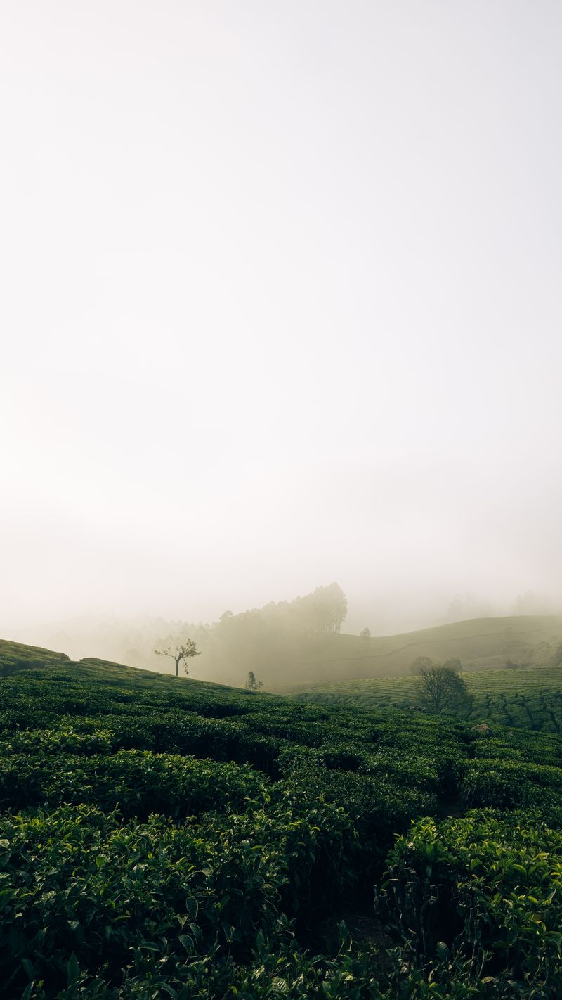
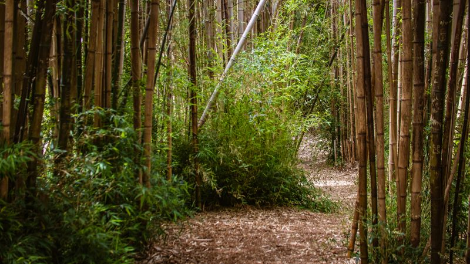

很多人对黄磜的第一印象是「云髻山旁边那个产茶的小镇」。这不算错，但错过了重点 —— 黄磜真正值得花时间的是海拔 560 米以上那几片连成片的茶田， 以及采茶、炒茶这些可以自己上手的环节。
这条一日线是我们按实际接待经验排的：早上采青、中午茶宴、下午逛茶园。 节奏不快，但每个环节都卡在最合适的时段 —— 采茶要赶清晨的露水，逛茶园要避开正午的曝晒。
先看这里：强烈建议自驾
镇内公交班次很少，景点之间普遍相隔 3–8 公里。没有车的话，一天最多只能走一个点位。 如果不开车，请提前联系镇旅游热线安排包车，或直接住进茶田旁的民宿。
怎么到黄磜
黄磜镇属广东省韶关市新丰县，距县城 23 公里。三个主要方向的到法：
- 广州出发：上大广高速至新丰出口，全程约 2 小时 40 分。路况最好，也最省心。
- 韶关市区出发：约 1 小时 30 分。后半段是盘山路，弯多，夜间不建议赶路。
- 高铁 + 接驳：乘至韶关站或新丰站，转客运班车到新丰县城，再从县城打车 23 公里进镇。
别把「23 公里」想简单了
这 23 公里是从县城到镇上的距离，全程上山。打车大约 40 分钟， 但下午五点后县城方向的车就很少了。如果当天要返回县城，请务必和司机约好回程时间。
一日行程时间轴
以下是按春夏采茶季排的时刻表。秋冬季节采茶环节会替换为炒茶与品鉴，其余不变。
从县城或住宿地出发
建议住在雪峒或茶峒附近的民宿，这样这段路只有十来分钟。 从新丰县城出发的话，请把时间提前到 06:30。
雪峒茶园 · 采青
茶农会发竹篓和围裙，教你怎么认「一芽二叶」。别贪多 —— 三个小时采的鲜叶，炒出来大概只有二两干茶。清晨的茶田有雾，是全天光线最好的时候。
炒茶房 · 杀青与揉捻
刚采的鲜叶要尽快下锅。手贴在锅边试温、快速翻拌， 这个环节比想象中累，但也是整条线里最有参与感的一段。
竹林茶宴 · 午餐
八道菜全部以茶入馔。饭后会现烤竹筒茶，配着自己上午做的那锅茶一起喝。 这段时间也是避开正午日晒的好时机。
茶峒云雾茶田 · 自由漫步
从雪峒开车约 15 分钟。这片茶田坡度更缓、视野更开， 有观景平台可以坐下来。如果下午还有精力，可以加一站营盘高山茶园。
返程 · 或留下看日落
傍晚的侧逆光很适合拍照。如果不赶时间，建议在茶田多留半小时再走 —— 这段路夜里没有路灯，天黑前下山更安全。
花费明细
以下为两人自驾的实际花费参考，按 2026 年当地价格整理。
| 项目 | 单价 | 数量 | 小计 |
|---|---|---|---|
| 采茶制茶体验 | ¥120 / 人 | 2 | ¥240 |
| 竹林茶宴 | ¥168 / 人 | 2 | ¥336 |
| 茶田停车费 | ¥10 / 次 | 2 | ¥20 |
| 带走的成品茶 | 免费（约二两） | 2 | ¥0 |
| 油费与高速 | 按广州往返估算 | 1 | ¥260 |
| 合计 | ¥856 | ||
线路上的三个点位
这条线只用到三处地点，都在开车十几分钟的范围内。点开可以看各自的详细信息。


几个容易踩的坑
- 穿错了鞋。茶田是松软的坡地，早上有露水。 穿小白鞋或凉鞋的话，半天下来脚会很不舒服，建议运动鞋或徒步鞋。
- 没带现金。采茶体验和部分农家餐只收现金或微信， 现场找 ATM 很不方便。备两三百现金就够。
- 低估了日晒。海拔 560 米以上紫外线比县城强， 哪怕阴天也要防晒。茶田没有遮阴的地方。
- 以为随时能采茶。春茶在 3–5 月，秋茶在 9–10 月， 其余时段只有炒茶和品鉴。出发前一定要电话确认当季状态。
- 当天来回太赶。如果从广州出发又想走完整条线， 基本要 14 小时在路上与茶田之间。住一晚体验会好很多。
常见问题
小朋友可以参加采茶吗？
可以，而且很受欢迎。3 岁以上能在家长陪同下采茶，炒茶环节因为锅温高， 建议 8 岁以上再上手。茶点是另一个很适合孩子的选择。
下雨天怎么办？
小雨一般照常进行，茶田里雨中采茶反而是不少摄影师喜欢的场景。 大雨的话采茶会改为室内炒茶与品鉴，或与商家协商改期。
需要提前多久预约？
平日提前 1 天电话预约即可。周末和节假日建议提前 3 天， 红叶季（11 月）与樱花季（1–2 月）最好提前一周以上。
旅客反馈
评论 · 36 条
提醒后来的人，我们没自驾，从县城打车进去花了 130 块，回程差点没车。 现在看攻略里那句「强烈建议自驾」是认真的，别学我们。
茶宴那顿比我预期好太多，本来以为就是普通农家菜， 结果八道菜每道都有茶味，竹筒烤茶那段尤其惊喜。
按这条线走的，时间基本对得上。唯一想说：炒茶那一步真的很烫手， 带个薄手套会舒服很多。另外我们 4 月去的，茶田里蚊子比想象中多。